American Baseball League · Depth chart & lineups
Baltimore Orioles
← Team page · Payroll · Transactions
Based on games played and started through May 13, 2002. The OOTP export has no saved depth chart or lineup card, so this is derived from real usage. Lineups and depth chart list only players on the active roster now (26 players).
Most common lineups
For each batting-order spot, the active player who started there most often against that kind of starter (each player used once). Starts in spot = games he started in that spot out of the games against that hand. AVG/OBP/SLG: his season line with this club.
vs. right-handed starters 30 games
| # | Player | Pos | Starts in spot | AVG | OBP | SLG |
|---|---|---|---|---|---|---|
| 1 | 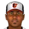 Charles Gipson | RF | 23 of 30 | .250 | .340 | .318 |
| 2 | 1B | 19 of 30 | .344 | .393 | .497 | |
| 3 | 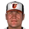 John Vander Wal | LF | 18 of 30 | .270 | .335 | .473 |
| 4 | 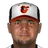 Carlos Lee | 3B | 26 of 30 | .311 | .364 | .464 |
| 5 | Benny Agbayani | DH | 15 of 30 | .308 | .381 | .442 |
| 6 | 2B | 19 of 30 | .305 | .349 | .418 | |
| 7 | C | 11 of 30 | .248 | .305 | .314 | |
| 8 | 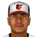 Darren Lewis | CF | 14 of 30 | .331 | .397 | .409 |
| 9 | Rey Ordonez | SS | 20 of 30 | .280 | .322 | .326 |
vs. left-handed starters 10 games
| # | Player | Pos | Starts in spot | AVG | OBP | SLG |
|---|---|---|---|---|---|---|
| 1 | Charles Gipson | RF | 9 of 10 | .250 | .340 | .318 |
| 2 | Benny Agbayani | DH | 9 of 10 | .308 | .381 | .442 |
| 3 | 1B | 8 of 10 | .344 | .393 | .497 | |
| 4 | Carlos Lee | 3B | 8 of 10 | .311 | .364 | .464 |
| 5 | John Vander Wal | LF | 7 of 10 | .270 | .335 | .473 |
| 6 | 2B | 6 of 10 | .305 | .349 | .418 | |
| 7 | C | 4 of 10 | .248 | .305 | .314 | |
| 8 | Darren Lewis | CF | 5 of 10 | .331 | .397 | .409 |
| 9 | Rey Ordonez | SS | 5 of 10 | .280 | .322 | .326 |
Depth chart games started by position through May 13
| Pos | Role | Player | GS at pos | G | AVG | OBP | SLG | HR |
|---|---|---|---|---|---|---|---|---|
| C | Starter | 32 | 32 | .248 | .305 | .314 | 2 | |
| Backup 1 | 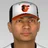 Eduardo Jimenez | 8 | 12 | .262 | .311 | .357 | 0 | |
| 1B | Starter | 33 | 40 | .344 | .393 | .497 | 3 | |
| Backup 1 | Benny Agbayani | 6 | 39 | .308 | .381 | .442 | 5 | |
| Backup 2 | 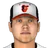 Graham Koonce | 1 | 17 | .143 | .250 | .171 | 0 | |
| Backup 3 | Alex Pelaez | 0 | 6 | .364 | .462 | .455 | 0 | |
| 2B | Starter | 33 | 37 | .305 | .349 | .418 | 2 | |
| Backup 1 | Charles Gipson | 5 | 34 | .250 | .340 | .318 | 0 | |
| Backup 2 | Alex Pelaez | 2 | 6 | .364 | .462 | .455 | 0 | |
| Backup 3 | 0 | 40 | .344 | .393 | .497 | 3 | ||
| 3B | Starter | Carlos Lee | 37 | 37 | .311 | .364 | .464 | 4 |
| Backup 1 | Charles Gipson | 2 | 34 | .250 | .340 | .318 | 0 | |
| Backup 2 | 1 | 37 | .305 | .349 | .418 | 2 | ||
| SS | Starter | Rey Ordonez | 37 | 38 | .280 | .322 | .326 | 0 |
| Backup 1 | 3 | 37 | .305 | .349 | .418 | 2 | ||
| LF | Starter | John Vander Wal | 36 | 38 | .270 | .335 | .473 | 6 |
| Backup 1 | Charles Gipson | 4 | 34 | .250 | .340 | .318 | 0 | |
| Backup 2 | Benny Agbayani | 0 | 39 | .308 | .381 | .442 | 5 | |
| Backup 3 | 0 | 40 | .344 | .393 | .497 | 3 | ||
| CF | Starter | Darren Lewis | 36 | 36 | .331 | .397 | .409 | 0 |
| Backup 1 | Eduardo Jimenez | 3 | 12 | .262 | .311 | .357 | 0 | |
| Backup 2 | Charles Gipson | 1 | 34 | .250 | .340 | .318 | 0 | |
| RF | Starter | Charles Gipson | 21 | 34 | .250 | .340 | .318 | 0 |
| Backup 1 | 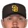 Xavier Nady | 6 | 15 | .265 | .265 | .367 | 1 | |
| Backup 2 | 5 | 40 | .344 | .393 | .497 | 3 | ||
| Backup 3 | Benny Agbayani | 5 | 39 | .308 | .381 | .442 | 5 | |
| DH | Starter | Benny Agbayani | 28 | 39 | .308 | .381 | .442 | 5 |
| Backup 1 | Xavier Nady | 6 | 15 | .265 | .265 | .367 | 1 | |
| Backup 2 | Graham Koonce | 6 | 17 | .143 | .250 | .171 | 0 |
Rotation OOTP projected starters (projected_starting_pitchers.csv)
| # | Pitcher | Active | GS | W-L | IP | ERA | WHIP | K |
|---|---|---|---|---|---|---|---|---|
| 1 | Yes | 1 | 0-0 | 5.1 | 8.44 | 1.31 | 4 | |
| 2 | 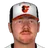 John Thomson | Yes | 8 | 1-3 | 55.0 | 3.44 | 1.13 | 24 |
| 3 | 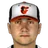 Brian Sweeney | Yes | 8 | 3-3 | 49.1 | 4.74 | 1.46 | 32 |
| 4 | 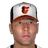 Eleazar Mora | Yes | 7 | 2-3 | 44.2 | 3.63 | 1.23 | 20 |
| 5 | Roy Oswalt | Yes | 9 | 2-5 | 63.0 | 4.57 | 1.29 | 54 |
Bullpen roles from usage: closer = most saves, setup = most holds, long relief = most innings per outing (1.1+ IP)
| Role | Pitcher | Throws | G | SV | HLD | IP | IP/G | ERA | K |
|---|---|---|---|---|---|---|---|---|---|
| Closer | 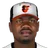 Guillermo Mota | RHP | 14 | 9 | 0 | 15.1 | 1.1 | 4.70 | 13 |
| Setup | John Rocker | LHP | 10 | 0 | 2 | 6.1 | 0.6 | 2.84 | 8 |
| Setup | Rich Garces | RHP | 8 | 0 | 1 | 16.2 | 2.1 | 3.78 | 17 |
| Long relief | Jason Kershner | LHP | 11 | 0 | 0 | 25.0 | 2.3 | 3.96 | 15 |
| Long relief | 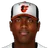 Darwin Cubillan | RHP | 9 | 0 | 0 | 14.1 | 1.6 | 5.02 | 8 |
| Middle relief | Kiko Calero | RHP | 12 | 0 | 1 | 14.1 | 1.2 | 2.51 | 12 |
| Middle relief | 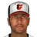 Aquillino Lopez | RHP | 7 | 0 | 0 | 6.0 | 0.9 | 13.50 | 5 |
Bench active position players outside the regular lineups
| Player | Pos | G | PA | AVG | OBP | SLG |
|---|---|---|---|---|---|---|
| Xavier Nady | 1B | 15 | 49 | .265 | .265 | .367 |
| Eduardo Jimenez | C | 12 | 45 | .262 | .311 | .357 |
| Graham Koonce | 1B | 17 | 40 | .143 | .250 | .171 |
| Ozzie Timmons | LF | 6 | 16 | .188 | .188 | .188 |
| Alex Pelaez | 1B | 6 | 13 | .364 | .462 | .455 |
Injured list
| Player | Pos | List | Days left |
|---|---|---|---|
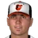 Noah Lowry | SP | 60-day | 135 |